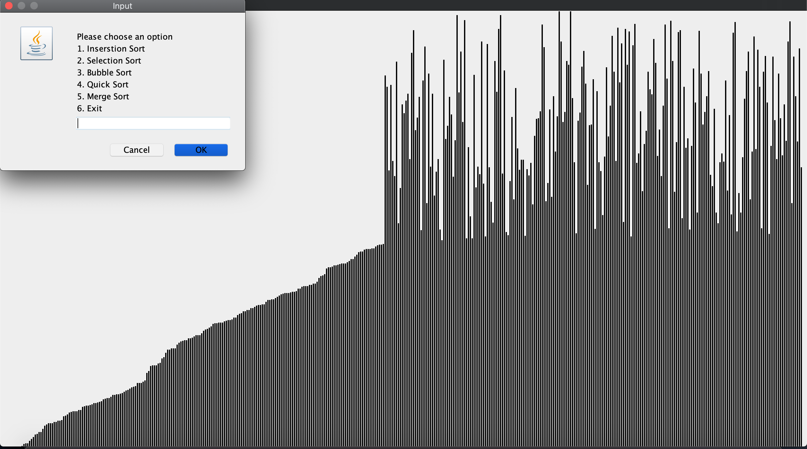
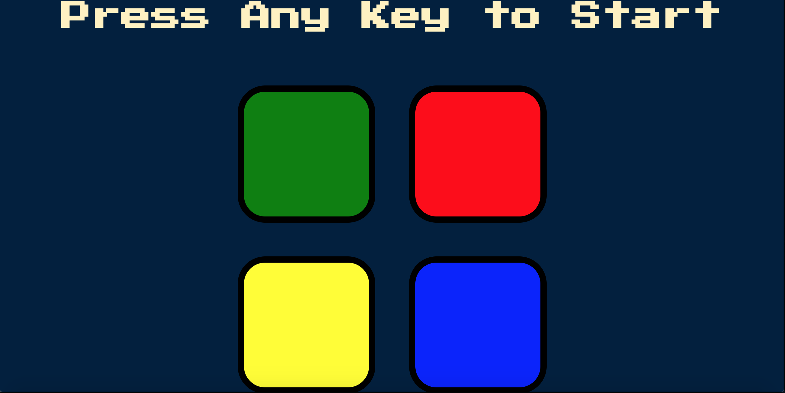
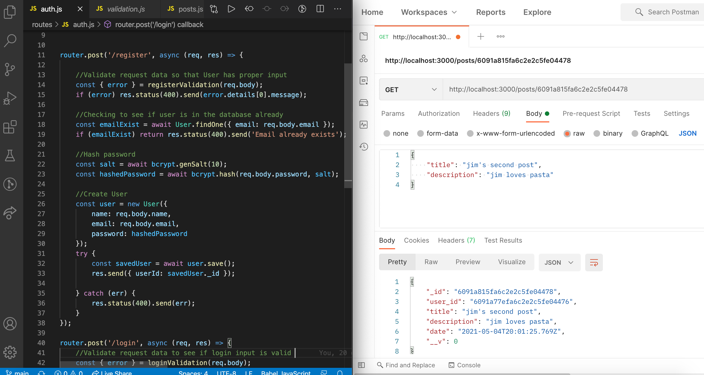
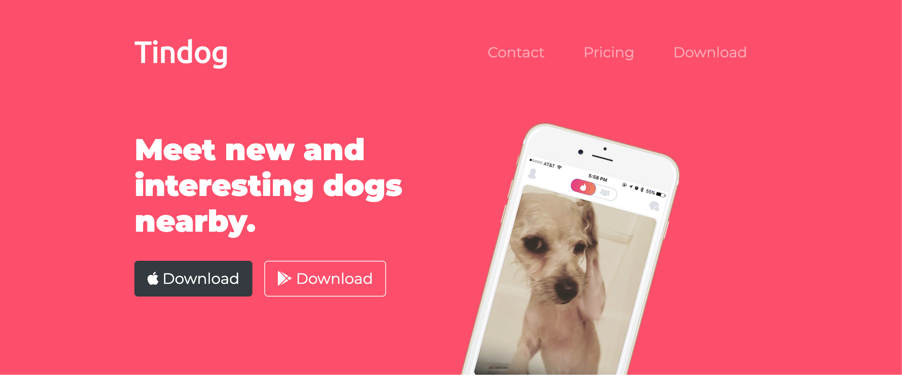
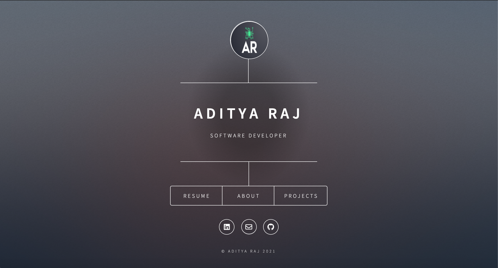
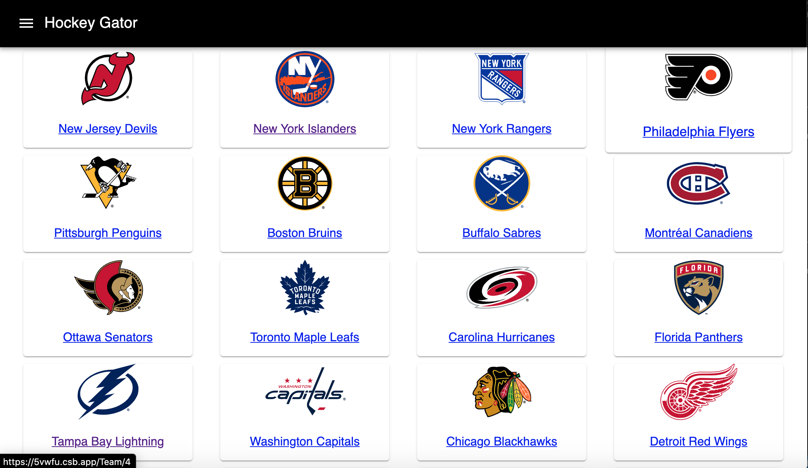
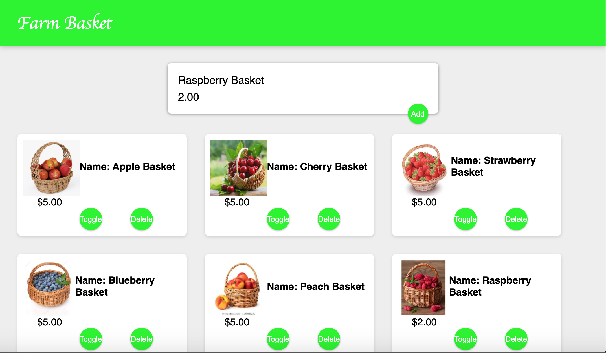

About
Hi I'm Adi.
I have completed my 3rd year of studying software engineering at the University of
Calgary.
I enjoy programming and working with new technologies as it allows me to build out ideas I have and
provides instant
feedback, which makes the learning process sometimes stressful but very fulfilling at the end of the
day. I have relevent
experience working in the tech industry and want to provide value with the skills I have. I am
currently looking for a
4-12 month intership starting in the fall of 2021.
Projects
Sorting Algorithm Visualizer

A visualization tool to display common sorting algorithms using Java. This project
helped me
understand more about how these algorithms behave and operate, while also being able to practice
using
Java Swing, Java AWT and Git.
View
Code
Simon Game

Web application of the popular handheld Simon game using HTML, CSS, JavaScript.
This interactive game allowed me to work with mp3 files and event-handlers to make
the game responsive to user input and genrate sounds which aimed to mimic the handheld Simon
game. Currently works on computers but not mobile which I still need to work on.
View Code
Try it out
REST API

RESTful API with authentication and authorization with user login and registration. Built
with technologies such as Node, Express, JWT (JSON Web Token), password encryption using
bcrypt and storing relevent data in MongoDB. This API has private routes which protects
the viewing of certain data depending on the logged in user. Postman was used to test
the API endpoints.
View
Code
TinDog

TinDog is a landing page for dogs to find their perfect partner. Inspired by Tinder this
landing page has different content on the page such as reviews, payment plans, download
and promotional sections. Basic HTML and CSS was used to create this project
View Code
Try it out
Personal Website

Created to share more about myself and my portfolio
View
Code
Hockey Gator(STILL UNDER CONSTRUCTION)

Web application that aims to display data and statistics
for different NHL teams and players. Technologies currently/planned on being used are React,
Redux,
React-Router and Material-UI.
Farm Basket

An application to simulate a farmers market for items which a vendor might sell. This project
helped me gain
confidence
with React and was a stepping stone that helped me in my progression to learn more advanced
topics within React and it's different libraries.
View Code